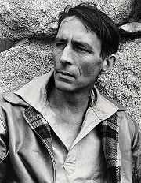

William van Alen: Chrysler, New York

Grant Wood: Americká gotika
|
SPOJENÉ STÁTY AMERICKÉ
Během první poloviny 20. století se staly Spojené státy americké největší světovou velmocí. Americká demokracie dala rozkvést hospodářství i kultuře. Spojené státy americké přestaly být závislé na impulzech z Evropy a naopak začaly vývoj určovat. Po zapojení USA do 1. světové války (1917) nastoupila řada Američanů dobrovolně na frontu. Válečné zážitky otřásly jejich základními hodnotami. Domů se vraceli zcela jiní lidé, kteří se nedokázali zařadit do běžné společnosti. Byli mezi nimi i spisovatelé, které Gertruda Steinová nazvala ztracenou generací.
Meziválečný vývoj byl ve znamení nástupu konzumní civilizace a postupném uvolňování puritánské morálky. Hlavní metou se stal úspěch a honba za penězi. Tzv. americký sen dával naději, že štěstí může dosáhnout každý, záleží jen na jeho schopnostech a pracovitosti. Příkladem byla řada přistěhovalců nebo chudáků, kteří se v Americe prosadili a získali peníze i moc. Symbolem americké velikosti byly mrakodrapy, zábavy filmová studia v Hollywoodu a puritánství prohibice, která vytvořila zdroj peněz pro zločinecké organizace. Nezaměstnanost, špatné sociální podmínky nebo nerovnoprávné postavení černošského obyvatelstva a indiánů zůstaly stinnými stránkami americké demokracie.

Hopper: Noční bar
|
Historie
Spojené státy americké se do obou světových válek zapojily až dodatečně. Vždy stály na straně vítězů a získaly si tak velký politický vliv. Na jejich území se navíc nebojovalo, takže oproti zničené Evropě se zdejší hospodářství rozvíjelo daleko intenzivněji. V americké zahraniční politice se střídala období izolacionismu a ovlivňování dění v Evropě i dalších oblastech světa. Celkovou politiku určovalo střídání demokratů a republikánů u moci. Roku 1920 získaly volební právo ženy a roku 1924 byla uznána občanská práva indiánů. Prezident Wilson (1913-1921) měl velký vliv na vznik Československa. Roku 1929 zasáhla Ameriku velká hospodářská krize, které čelil prezident F. D. Roosevelt (1932-1945) politikou tzv. nového údělu.

Lyonel Feininger: Plachetnice
|
Ernest Hemingway (1899-1961)
Ernest Hemingway [érnist hemingvej] odjel jako dobrovolník Červeného kříže na italskou frontu, kde byl těžce raněn. Jako novinář často putoval po Evropě. Miloval španělskou koridu, lovil zvířata v Africe a pobýval na Kubě. Je autorem knih Fiesta, Sbohem, armádo, Zelené pahorky africké, Komu zvoní hrana, Stařec a moře nebo Pohyblivý svátek. Roku 1954 obdržel Nobelovu cenu za literaturu. Hemingway spáchal sebevraždu. Patří k předním představitelům ztracené generace.
Henry Moore: Král a královna
|
Ernest Hemingway: Sbohem, armádo
Protiválečný román Sbohem, armádo vychází z vlastních zážitků autora. Mladý Američan Frederic Henry velí sanitním vozům na italské frontě, kam se přihlásil jako dobrovolník. Zamiluje se do anglické ošetřovatelky Kateřiny. Frederic je těžce raněn a zotavuje se v milánské nemocnici, kam za ním přijede i Kateřina. Po půl roce je Henry znovu povolán na frontu. Při ústupu opustí sanitku a je považován za dezertéra. Je zatčen, ale podaří se mu uniknout. S těhotnou Kateřinou potom prchá z Itálie do Švýcarska. Kateřině se ale narodí mrtvé dítě a sama při porodu umírá.
Ernest Hemingway: Stařec a moře
Novela Stařec a moře je alegorickým příběhem o souboji člověka s přírodou. Starý kubánský rybář Santiago a jeho mladý pomocník vyjíždějí na moře, ale již dlouho se jim nepodařilo ulovit žádnou rybu. Rodiče zakážou chlapci rybařit se Santiagem. Po třech měsících bez úlovku tedy vyjíždí na moře sám. Po dlouhém a vysilujícím souboji se mu podaří ulovit rybu svých snů – obrovského mečounovitého marlina. Během zpáteční cesty ale jeho úlovek sežerou žraloci. Chlapec se vrátí k Santiagovi, pečuje o nemocného starce a oba plánují společnou výpravu na moře.
|
Yousuf Karsh: Hemingway
Jaký problém líčí ukázka?
Jak skončili dobrovolníci, kteří pomáhali italským vojskům?
Jak mohla podobná zkušenost přispět k relativizaci hodnot ztracené generace?
Převyprávěj stručně děj ukázky.
Charakterizuj hlavní postavu.
Co si myslíš o Hemingwayově výroku „Člověka je možno zničit, ale ne porazit.“?
|
Theodore Dreiser (1871-1945)
Theodore Dreiser [sijedór drajzr] se živil jako žurnalista. Byl nesmlouvavým kritikem americké společnosti. Napsal romány Sestřička Carrie, Jennie Gerhardtová, Trilogie touhy nebo Americká tragédie. Jeho naturalistické knihy byly zprvu naprosto odmítnuty kritikou.

Edward Hopper: Obchod
|
Theodore Dreiser: Americká tragédie
Hlavní postavou románu Americká tragédie je Clyde Griffith, jehož snem je získat bohatství, vysoké společenské postavení a lásku krásných žen. Vystřídá několik podřadných zaměstnání v různých městech. Nakonec ho zaměstná strýc ve své továrně na prádlo, kde Clyde naváže milostný poměr s dělnicí Robertou Aldenovou. Clyde postupně proniká mezi společenskou smetánku a myslí si na dceru milionáře Sondru Finchleyovou. Ve společenském vzestupu mu ale brání těhotná Roberta. Při vyjížďce na jezeře ji Clyde nechá utopit, je zatčen a odsouzen k trestu smrti na elektrickém křesle.
Námět románu vychází ze skutečné události.
|
Zavraždil Clyde Robertu?
Co si myslíš o Clydovi?
|
John Steinbeck (1902-1968)
John Steinbeck [džon stajnbek] nedokončil univerzitní studia a prošel různými zaměstnáními. Byl také odborníkem na biologii. Vyznával až mystické sepětí člověka s přírodou, vesmírem a ostatními lidmi. Je autorem próz Nebeské pastviny, O myších a lidech (též divadelní hra), Hrozny hněvu, Na plechárně, Toulavý autobus, Na východ od ráje nebo Toulky s Charleym. Roku 1962 získal Nobelovu cenu za literaturu.
|
John Steinbeck: O myších a lidech
Novela O myších a lidech vypráví tragický příběh dvou námezdních dělníků, kteří putují po amerických farmách a sní o vlastním domě s polem a králíky. O slabomyslného siláka Lennieho se stará jeho ochránce George. Lennie rád hladí hebké věci, například myši, ale nechápe, že jim svým hlazením ubližuje a nakonec je zabije. Když už se přiblíží na dosah splnění jejich snu, Lennie zlomí vaz vyzývavé ženě, která se s ním dala do řeči. George chce přítele uchránit před lynčováním a raději ho sám zastřelí.
|

Jaký je tvůj názor na Lennieho?
Najdi v ukázce opakující se motivy. Jakou mají funkci?
|
William Faulkner (1897-1962)
William Faulkner [viljem fóknr] pocházel z jižanské rodiny. Vedl tulácký život, žil stranou společenského dění a vyhýbal se publicitě. Napsal novátorské romány Sartoris, Hluk a vřava, Absolone, Absolone!, Pobertové, Divoké palmy nebo Báj a trilogii Vesnice, Město, Sídlo. Většina z jeho děl tvoří tzv. yoknapatawphanskou ságu nazvanou podle fiktivního místa děje na americkém Jihu. Roku 1949 mu byla udělena Nobelova cena za literaturu.

Hopper: Úřad v noci
|
William Faulkner: Hluk a vřava
Román Hluk a vřava ukazuje rozpad jižanské rodiny. Názvy jednotlivých dílů tvoří pouze data 7.4.1928, 2.6.1910, 6.4.1928 a 8.4.1928. Vypravěči prvních tří dílů jsou bratři Compsonové. Slaboduchý Benjy vzpomíná na sestru Caddy, která o něj s láskou pečovala. Student Quentin neunesl sestřinu svatbu a utopil se v řece. Caddy po něm pojmenovala svou dceru, kterou nechala na výchovu svým rodičům a sama dům opustila. Zatrpklý Jason na své sourozence žárlí. Po smrti rodičů nechal Benjyho zavřít do blázince a přivlastnil si peníze, které Caddy posílala rodině na výchovu dcery. Quentina je strýci ukradne a utíká pryč s komediantem. Celá rodina se tak definitivně rozpadá. V posledním díle autor líčí život černošského služebnictva, v jehož pracovitosti a víře vidí východisko ze všeobecného úpadku.
Faulkner napsal ještě Dodatek k románu, Compsonové 1699-1945.
|

Jak se k Benjymu chovají ostatní postavy?
Pokus se o charakteristiku všech postav.
Jak se staví naše společnost k postiženým?
Charakterizuj jazyk ukázky.
|
Francis Scott Fitzgerald
(1896-1940)
Fitzgerald [ficdžerld] se rozhodl prodrat do „vyšší společnosti“. Prostředkem k uskutečnění tohoto „amerického snu“ se měla stát literatura, ale jeho tvorba byla plně doceněna až posmrtně. Závěr života strávil v Hollywoodu, kde psal filmové scénáře. Je autorem próz Na prahu ráje, Diamant velký jako Ritz, Velký Gatsby nebo Něžná je noc. Román Velký magnát již nedopsal.
|
Francis Scott Fitzgerald: Velký Gatsby
Hlavní postavou románu Velký Gatsby je Jay Gatsby, který dosáhl „amerického snu“ – obrovského bohatství. Jeho sen je ale jiný – kdysi se zamiloval do nynější manželky svého souseda Daisy Buchananové a teď se ji pokouší získat nádherným domem s bazénem nebo okázalými večírky. Daisy ale zajímá pouze jeho bohatství, nikoliv skutečný cit. Když se vrací z jednoho z večírků, srazí Gatsbyho autem manželovu milenku. Její muž se rozhodne pomstít smrt své ženy a domnělého zločince zastřelí. Po smrti se Gatsbymu dostane od bývalých hostů jeho večírků pouze opovržení.
|
David Silvette: Fitzgerald
Charakterizuj jednotlivé postavy.
Chtěl/a bys být bohatý/á? Proč?
Myslíš si, že lze k bohatství přijít poctivou prací? Jak?
|
Robinson Jeffers (1887-1962)
Jeffers [džefrz] žil samotářským životem na břehu Tichého oceánu, který miloval a opěvoval ve svých básních. Ve vsi Karmel si postavil dům z kamene, který vlastnoručně nalámal. Je autorem básní Tamar, Hřebec grošák, Mara, Silák Hungerfield, Ženy od mysu Sur nebo Pastýřka putující k dubnu, sbírek poezie Hněvej se na slunce nebo Dvojbřitá sekera a dramat Odcházející Orestes, Médea či Žena z Kréty.
|
Jeffersova poezie
Jeffers psal hlavně přírodní lyriku. Jeho životními tématy byly oceán, těžký život lidí v drsném prostředí nebo láska k manželce Uně.
|

Jak se ti líbí Jeffersovy básně?
Vyber si jednu z nich a nakresli k ní ilustraci.
|
Henry Miller (1891-1980)
Miller [milr] vystřídal celou řadu povolání. Žil bohémských životem ze dne na den, střídal milenky i manželky a opovrhoval společenskými konvencemi. Jeho díla nechtěl zprvu nikdo vydávat, a tak je tisk i prodával sám. Opakovaně pobýval v Paříži. Je autorem skandálních knih Obratník Raka, Obratník Kozoroha nebo trilogie Růžové ukřižování (Sexus, Plexus, Nexus).
Hopper: Benzinka
|
Henry Miller: Obratník Raka
Román Obratník Raka vzbudil skandál především sexuální otevřeností. Autobiografická próza líčí Millerův pobyt v Paříži na začátku 30. let. Spisovatel zde živořil na pokraji bídy. Chtěl se živit literaturou, ale jeho články nikdo netiskl. Tato próza je volnou koláží různých historek, úvah a portrétů osob, se kterými se v Paříži seznámil. Miller zachycuje bezstarostný život ze dne na den a vyznává ideál absolutně svobodného jedince, který není závislý na žádných společenských konvencích.
|

Čím tě zaujala tato ukázka?
|
Langston Hughes (1902-1967)
Černošský básník Langston Hughes [lengston hjúz] patřil k hlavním představitelům tzv. harlemské renesance. Jeho rodiče žili odděleně, Hughes procestoval s otcem USA a Mexiko. Živil se jako námořník, kuchtík nebo hotelový poslíček, později vystudoval univerzitu v Pennsylvanii. Cestoval po Evropě i Asii. Napsal básnické sbírky Unavené blues, Pěkné šaty židovi, Nový zpěv nebo Shakespeare v Harlemu, divadelní hru Mulat, knihu povídek To jsou bílí či román Nikoliv beze smíchu.
Hopper: Letní večer
|
Hughesova poezie
Ústředním tématem Hughesovy tvorby byl boj proti rasismu a sociální nespravedlnosti. Ve svých básních vycházel z černošských lidových balad a blues. Patrný je i vliv jazzu, některé verše dokonce vyšly přímo s jazzovým doprovodem. Jeho poezie je vysoce angažovaná až protestní. Náměty vycházejí z každodenního života černochů v Harlemu. Hughes se stylizuje do role jejich mluvčího a barda všech utlačovaných.
Další autoři a jejich díla
Eugene Gladstone O’Neill: Smutek sluší Elektře
Sinclair Lewis: Babit, Továrník Dodsworth, Arrowsmith
Upton Sinclair: Král uhlí, Petrolej, Boston
Gertruda Steinová: Tři životy
Irving Stone: Žízeň po životě, Námořník na koni, Agónie a extáze
|

Setkal/a ses někdy s projevy rasismu? Jakými?
Znáš nějakého černocha? Jaký je?
Co může proti rasismu dělat každý z nás?
Srovnej označení černoch, negr a Afroameričan.
Jaký je tvůj názor na tzv. pozitivní diskriminaci?
Se kterými problémy se potýkají obyvatelé Afriky v současnosti?
|
Internetové stránky
Hemingway
Hemingway
Hemingway
Hemingway
Hemingway
Steinbeck
Steinbeck
Steinbeck
Fitzgerald
Faulkner
Faulkner
Faulkner
Faulkner
Jeffers
Jeffers
Jeffersův dům
Jeffersův dům
Miller
Miller
Hughes
Hughes
Hughes
Steinová
Fantys: Knihkupectví Shakespeare a spol., článek
Wood, malíř
Wood, malíř
Hopper, malíř
Hopper, malíř
Chrysler, New York
Wright, architekt
Wright, architekt
|
Doporučená četba
Baker, Carlos: Ernst Hemingway, přel. R.Klekner, BB Art, Praha 2001
Baturin, Sergej: Theodore Dreiser, Postavy a osudy, přel. J.Mojžiš, Obzor, Bratislava 1987
Bruccoli, Matthew J.: Fitzgerald a Hemingway, Nebezpečné přátelství, přel. I.Vichnarová, Ivo Železný, Praha 2001
Dreiser, Theodore: Americká tragédie, přel. Z.Urbánek, SNKLU, Praha 1965
Faulkner, William: Hluk a vřava, přel. Pellarovi, Odeon, Praha 1997
Fitzgerald, Francis Scott: Velký Gatsby, přel. L.Dorůžka, Lunarion, Praha 1991
Hemingway, Ernest: Sbohem, armádo, přel. J.Škvorecký, SNKLU, Praha 1965
Hemingway, E.: Stařec a moře, přel. F.Vrba, SNKLU, Praha 1963
Hughes, Langston: Černoch zpívá blues, přel. J.Valja, SNKLHU, Praha 1957
Hughes, L.: Harlemský zpěvník, přel. J.Valja, Mladá fronta, Praha 1963
Jeffers, Robinson: Básně z Jestřábí věže, přel. K.Bednář, ČSS, Praha 1964
Lawrence, D.H.: Studie z klasické americké literatury, Host, Brno 2002
Machala, D. a I.: To pravé místo, Reportér Hemingway, Novinář, Praha 1987
Miller, Henry: Kniha přátel, přel. P.Sulovský, Votobia, Olomouc 1997
Miller, H.: Obratník Raka, přel. J.Nil, X egem, Praha 1991
Ruland, R., Bradbury, M.: Od puritanismu k postmodernismu, Dějiny americké literatury, Mladá fronta, Praha 1997
Sládek, Čestmír: Hemingwayova Afrika, Pressfoto, Praha 1974
Steinbeck, John: O myších a lidech, Plameny zářivé, přel. Vendyš, Knotková-Čapková, Svoboda, Praha 1994
Steinová, Gertruda: Vlastní životopis Alice B. Toklasové, přel. J.Hauková, NČVU, Praha 1968
Vybrané spisy Theodora Dreisera (7 svazků)
|
Vypracuj písemný referát o některé z uvedených knih.
Picasso: Gertruda Steinová
Wrightova vila
|
|